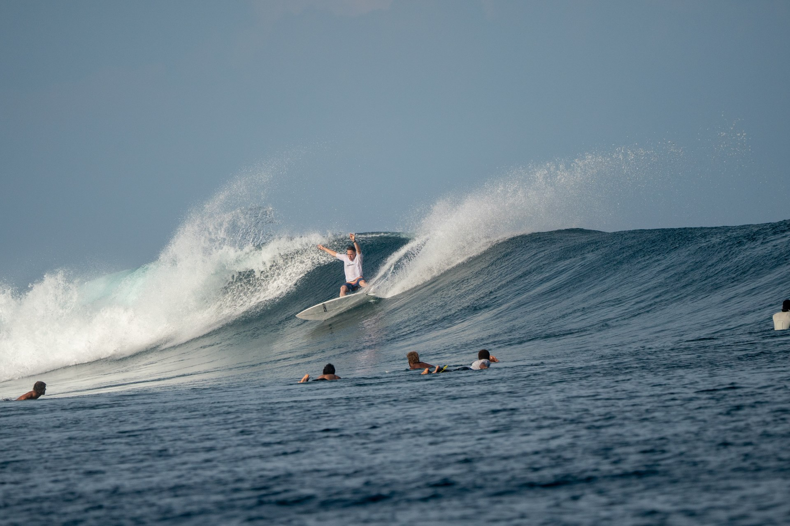
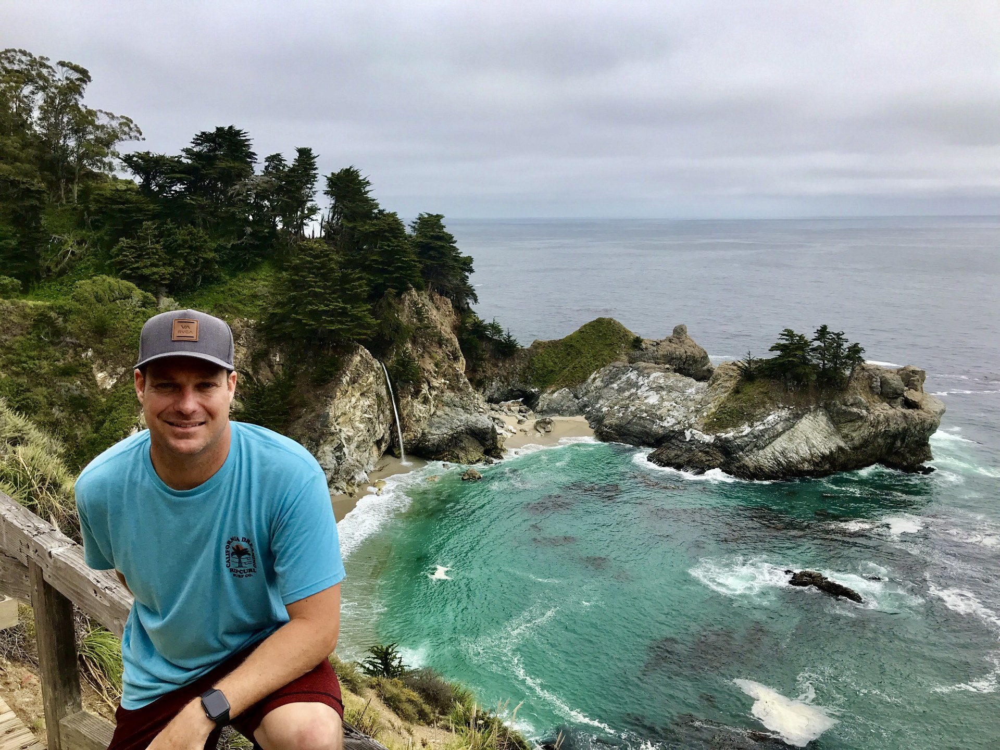

Surfing and the Beach
Surfing has been one of my longtime hobbies. It keeps me learning, patient, and ready for the next wave.
Welcome
I work with students in grades 6–12 at the La Jolla Resource Center. My goal is simple: help you build a school plan that connects to your interests, fits your life, and moves you toward what comes next.
I am a teacher and educational technology specialist. I earned my bachelor's degree in education from the University of Delaware and my master's degree in Educational Technology from California State University, Fullerton. I completed professional development and credentialing at UC San Diego, earned an Educational Technology Award from the Professional Development Institute, and completed Leading Edge, AVID, and WRITE Institute training.
I care about making school more personal and useful. I also work with educators on practical, responsible ways to use technology and AI. The tool is never the point. The point is helping people learn, solve problems, and do work they are proud of.
I believe getting to know each other makes it easier to work as a team. Here are a few things I enjoy when I am not teaching.

Surfing has been one of my longtime hobbies. It keeps me learning, patient, and ready for the next wave.
I enjoy snowboarding, hiking, and spending time outdoors. A challenging trail or a day in the mountains is a good reset.

I like exploring new places, camping, and spending time with family and friends. Travel is one of my favorite ways to keep learning.
Your interests, strengths, responsibilities, and goals matter. When it makes sense, we can connect them to examples, readings, projects, and course choices.
Big goals become manageable when we turn them into clear weekly actions. We will focus on what needs to happen next, then keep building.
Technology, including AI, can support learning when it helps you think, create, practice, and understand. It should strengthen your work, not replace your thinking.